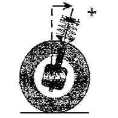
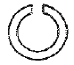
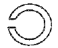
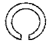

자동차차체수리기능사 (2015-04-04 기출문제)
1과목: 자동차공학
1. 다음 중 국제단위계(SI단위)로 틀린 것은?
- m/s
- Pa
- m/s2
- mile/h
(정답률: 79%)

2. 모노코크 바디의 각부 구조에서 프론트 바디로 구분하기 어려운 패널은?
- 후드 패널
- 라디에이터 서포트 패널
- 쿼터 패널
- 에이프런 패널
(정답률: 65%)
3. 물질이 고체로부터 직접 기체로 변화하는 과정을 무엇이라 하는가?
- 발열
- 용융
- 융해
- 승화
(정답률: 83%)
4. 기관에서 윤활유 소비가 과다한 직접적인 원인으로 가장 거리가 먼 것은?
- 피스톤 링의 마모
- 실린더의 마모
- 밸브 스탬 실(seal)의 손상
- 수온조절기(서모스탯)의 열림 유지
(정답률: 88%)
5. 그림과 같이 자동차를 측면에서 보았을때, 킹핀의 중심선이 노면에 수직인 직선에 대하여 어느 한 쪽으로 기울어져 있는 상태를 무엇이라 하는가?

- 캠버
- 캐스터
- 토인
- 스러스트 각
(정답률: 81%)
6. 자동차의 차체 모양에 따른 분류로 고정된 지붕이 있고 트렁크 부분이 튀어 나와 있는 일반적인 승용차를 통칭하는자동차는?
- 세단(sedan)
- 쿠페(coupe)
- 컨버터블(Convertible)
- 웨건(Wagon)
(정답률: 86%)
7. 각 온도의 단위 중 틀린 것은?
- 섭씨온도 : ℃
- 화씨온도 : ℉
- 절대온도 : K
- 랭킨온도 : D
(정답률: 89%)
8. 타이어의 골격을 이루는 플라이와 비드 부분의 총칭으로, 타이어에서 트래드, 사이드월, 벨트를 제거한 부분은?
- 비드
- 브레이커
- 트레드
- 카커스
(정답률: 82%)
9. 전압에 대한 설명으로 맞는 것은?
- 한 개 보다 두 개의 전지를 직렬로 연결하였을 때 전구의 불빛이 더 밝아진다.
- 전압의 표시는 A 로 표시한다
- 전압은 전자의 이동을 방해한다
- 전압은 전기의 양을 말한다
(정답률: 79%)
10. 모노코크 바디가 앞 또는 뒤쪽엣 충격을 받았을 때 충돌에너지를 흡수하여 찌그러지게 만든 부위는?
- 사이드 실
- 템퍼링
- 클러시 포인트
- 린포스먼트
(정답률: 76%)
11. 표면경화 열처리 방법에 해당하지 않는 것은?
- 침탄법
- 질화법
- 고주파경화법
- 향온열처리법
(정답률: 71%)
12. 용접시 열영향부의 균열이 아닌 것은?
- 비드밑 균열
- 토(TOE) 균열
- 비드 균열
- 크레이터 균열
(정답률: 58%)
13. 금속재료의 결정입자로 된 조직을 바꿔서 필요한성질의 금속을 얻을 때 취하는 방법이 아닌 것은?
- 합금 방법
- 열처리 방법
- 냉간 및 열간 가공법
- 절단 가공 방법
(정답률: 73%)
14. 황동계 합금에 관한 설명 중 가장 거리가 먼 것은?
- Zn 40%에서 인장 강도가 최대이다.
- 7 : 3 황동은 주로 냉간 가공의 프레스 성형에 사용된다.
- 6 : 4 황동은 열간 가공 혹은 주조용으로 사용된다.
- Zn 40%에서 연신률이 최대이다.
(정답률: 65%)
15. KS규격 중 기계 부분은 어디에 해당하는가?
- KS B
- KS D
- KS C
- KS A
(정답률: 72%)
16. 열가소성 플라스틱은?(문제 오류로 가답안 발표시 3번으로 발표되었지만 확정답안 발표시 1, 3, 4번이 정답 처리 되었습니다. 여기서는 가답안인 3번을 누르면 정답 처리 됩니다.)
- PP
- UR
- TPUR
- PC
(정답률: 76%)
17. 용접선 시작부와 종단부의 결함을 줄이기 위하여 시작부와 종단부에 모재와 같은 재질의 보조판을 붙여서 용접하는 경우가 있는데 이 보조판을 무엇이라하는가?
- 엔드탭
- 가우징
- 스캘럽
- 스트롱백
(정답률: 71%)
18. 철의 5대 원소에 해당하지 않는것은?
- 구리(CU)
- 망간(Mn)
- 규소(Si)
- 인(p)
(정답률: 64%)
19. 피복 금속 아크 용접기의 용접 전원의 특성 중 관계 없는 것은?
- 아크의 발생이 용이하고 안정하게 유지할수 있을것
- 아크의 길이가 변화하여도, 전류의 변화가 적을것
- 단락전류가 클 것
- 부하전류가 변화하여도 단자 전압이 변화하지 않을것
(정답률: 78%)
20. 고장력 강판이 일반 강판에 비해 가장 우수한점은?
- 인장 강도와 항복점
- 내열성과 내식성
- 탄성과 소성
- 용접성과 도장성
(정답률: 68%)
2과목: 자동차차체정비
21. 링끝이 절개된 부분을 도면에 표시할 때 그부분이 어느 쪽에 나타나도록 그리는 것이 옳은가?



(정답률: 82%)
22. 도어와 바디사이에 부착되어 비, 바람, 물 및 먼지의 침입을 방지함과 동시에 도어 개폐시의 충격완화와 진동방지의 역할을 하는 것은?
- 도어프레임
- 도어웨더스트립
- 스폰지
- 글래스
(정답률: 83%)
23. 미그아크(MIG Arc)용접 토치 케이블의 구조 중 용접 와이어를 콘택트 팁 끝까지 운반하기 위한 접속선은?
- 가스 호스
- 파워 메인 케이블
- 플랙시블 라이너
- 제어 회로 리드
(정답률: 65%)
24. 체심 입방격자의 원자 수는 모두 몇 개인가?
- 8
- 9
- 14
- 17
(정답률: 73%)
25. 차체 박판 용접시 CO2 아크용접 요령에서 거리가 가장 먼 것은?
- 토치의 기울기는 10~15도 정도이다.
- 토치 이동속도는 1분당 1M정도이다
- 맞대기 용접은 연속적으로 용접한다.
- 모재와 팁의 거리는 10mm 전 후 이다.
(정답률: 68%)
26. 프레임의 한쪽 사이드멤버를 단순한 빔으로 생각할 경우 사이드멤버와 휠 베이스 사이에서는 사이드멤버 아래쪽은 잡아당겨지고,위쪽은 압축력이 작용하게 된다. 그 결과는 어떻게 되는가?
- 아래쪽 - 만곡, 위 부분 - 균열
- 아래쪽 - 균열, 위 부분 - 만곡
- 아래쪽 - 절손, 위 부분 - 균열
- 아래쪽 - 만곡, 위 부분 - 절손
(정답률: 69%)
27. 전기저항 스포트 용접기의 용접 암과 전극의 선택에서 주의 사항으로 틀린것은?
- 상하의 암은 평행하게 장착한다.
- 전극을 바르게 상하 정렬 시킨다
- 전극 팁의 접촉면을 완전히 평행하게 다듬질한다.
- 용접 하려고하는 부분에 적합하고 가능한 긴 것을 사용한다.
(정답률: 77%)
28. 프레임 센터링 게이지의 용도중 틀린 것은?
- 차체 하부의 중심선을 측정한다.
- 사이드 스웨이를 측정한다.
- 대각선을 측정한다.
- 카울부를 측정한다.
(정답률: 62%)
29. 정면으로 충격을 받은 자동차 프레임에는 응력이 집중될 우려가 있다. 이때 프레임의 어느 부분을 우선 살펴야 하는가?
- 평면부위
- 천공부위
- 고정부위
- 천장부위
(정답률: 64%)
30. 퍼티를 경화제와 혼합할 때 사용하며 규정된 규격은 없고 용도에 알맞게 만들어 사용하는 것은?
- 스크레이퍼
- 주걱
- 이김판(정반)
- 와이어 브러시
(정답률: 68%)
31. 차체 파손을 판독하기 위해서 센터링게이지를 설치하는 방법으로 잘못된것은?
- 게이지는 반드시 차량을 네 부분으로 구분하여 설치한다.
- 베이스는 반드시 게이지 설치를 해야한다.
- 게이지는 반드시 파손부위에 집중적으로 건다.
- 기준 참조점에 걸고,다음 게이지는 파손부위에 건다
(정답률: 82%)
32. 스포트 제거 드릴의 구성부품이 아닌 것은?
- 나사
- 스프링
- 센터 파이로트
- 치즐
(정답률: 68%)
33. 도료를 구성하는 사항중 도료의 목적을 결정하는 재료는?
- 수지
- 용제
- 첨가제
- 안료
(정답률: 59%)
34. 프레임교정용 장비 선택시 사용자의 자세 중 가장 바람직한 것은?
- 사전에 장비에 대한 지식을 파악한다.
- 고가의 장비를 선택한다.
- 안전에 대한 교육이 필요없다.
- 장비 선택 시 시간 단축을 중점적으로 고려한다.
(정답률: 88%)
35. 판금퍼티의 특성 중 거리가 먼 것은?
- 강판면에 부착력이 강하다.
- 두껍게 도포할 수 있다.
- 입자가 미세하다.
- 내충격성, 내수축성이 우수하다.
(정답률: 63%)
36. 차체판금 퍼티작업 방법으로 가장 옳은것은?
- 한번 퍼티 도포량 높이는 5mm정도가 적당하다.
- 혼합용 정반이 없다면 판재나 두꺼운 종이를 써도 무방하다
- 한번 도포량 만큼씩 사용하는 것보다 많은 양을 혼합해서 두고쓰는것이 좋다
- 공기의 거품이 남아 있으면 도막 파열의 원인이 되므로 제거한다.
(정답률: 78%)
37. 차체 차수도에 대한 설명으로 옳은 것은?
- 차체 수리에 필요한 대각선 길이만 기록되어 있다.
- 차체복원 작업의 기준이 되는 수치가 기록되어 있다.
- 차체수리에 필요한 작업의 기준 위치를 표시한 것이다.
- 용접작업에 필요한 접합의 기준 지점을 표시한 것이다.
(정답률: 66%)
38. 지촉 건조된 상태를 가장 잘 표현한 것은?
- 도막을 손가락 끝으로 약간의 압력으로 눌렀을때 지문이 남지 않는 상태
- 엄지를 도막 위에 눌러 회전하여 가장 센압력을 주었을때 스친 흠이 없는 상태
- 도막을 손가락으로 가볍게 눌렀을 때 점착은 있으나 도료가 손가락에 묻지 않는상태
- 손톱으로 도막을 벗기기가 곤란하고 칼로 자르더라도 충분히 저항을 나타내는 상태
(정답률: 74%)
39. 트램 트랙킹 게이지의 비틀림 측정에 들지 않는 것은?
- 프레임의 마름모꼴 휨
- 앞 부분의 옆으로 휨
- 리어 액슬의 흔들림
- 휠 베이스의 흔들림
(정답률: 72%)
40. 프런트 펜더를 장착하기 전에 무엇을 먼저 작업해야 하는가?
- 부식방지를 위해 코팅 처리한다.
- 샌더처리 후 조립한다.
- 엠보싱 처리를 한다.
- 조립될 부위에 종이를 끼워 조립한다.
(정답률: 75%)
3과목: 안전관리
41. 충돌 및 접촉 사고 시 차체를 보호하는 것이 목적이지만 자동차 외관상의 아름다움도 함께 부여하는것은?
- 범퍼
- 프런트 펜더
- 도어
- 그릴
(정답률: 87%)
42. 차체부품 제작시 리벳구멍 뚫기 작업 후 균열 방지를 위해 다듬질을 한다. 이 때 가공하는 작업방법을 무엇이라고 하는가?
- 탭 작업
- 다이스 작업
- 리밍 작업
- 코오킹 작업
(정답률: 72%)
43. 콤프레셔 취급 방법중 옳지 않는것은?
- v벨트의 상태는 공기 압축기와 전동기의 중간을 눌러 15~25mm 정도 여유간극이 좋다.
- 흡기구의 필터는 2주 간격으로 청소하고,불결해지면교환한다.
- 실린더 헤드의 방열부는 자주 청소하여 먼지등을 제거시킨다.
- 에어탱크는 1주간격으로 배출구를 열어 수분,유분을 배출시킨다.
(정답률: 66%)
44. 차체패널 중 용접이음 방식으로 결합된 패널은?
- 엔진 후드
- 앞 휀더
- 리어 쿼터패널
- 트렁크 리드
(정답률: 64%)
45. 자동차 판금 공구중 끝이 평평하게 되어 있으면 긴 손잡이가 있는 것이 특징으로,구부러진 곳이나 지렛대로 쓰이는 공구는?
- 돌리
- 해머
- 스푼
- 훅
(정답률: 70%)
46. 전면 충돌시에 맴버 자체가 변형 되도록 하여 객실에 영향을 최소화 하기 위하여 굴곡을 두는것을 무엇이라하는가?
- 비딩
- 스토퍼
- 마운트
- 킥업
(정답률: 78%)
47. 강판을 소성가공 할 때 열간가공과 냉간가공을 구분하는 온도는?
- 피니싱 온도
- 용해 온도
- 변태 온도
- 재결정 온도
(정답률: 69%)
48. 보수도장을 하기 위한 차체 표면검사 중 틀린것은?
- 적당한 조명을 이용한다
- 차체표면에 손바닥의 감각을 이용한다.
- 차체 측면에서 15~45도 각도는 목측으로 검사한다.
- 밝은 곳에서 어두운 곳으로 검사한다.
(정답률: 78%)
49. 쿼터패널은 바디의 강도 유지상 중요한 패널이다. 측면 뒷부분의 쿼터패널과 서로 병합되지 않는 패널은?
- 리어 휠 하우스
- 백 패널
- 루프 패널
- 트렁크리드
(정답률: 57%)
50. 변형된 사이드 패널을 교환하고자 한다. 직접적으로 필요하지않는 공구 및 기기는?
- 패널 수정기
- 커터기
- 스포트 용접기
- 에어 압축기
(정답률: 73%)
51. 렌치를 사용한 작업에 대한 설명으로 틀린것은?
- 스패너의 자루가 짧다고 느낄 때는 긴파이프를 연결하여 사용할것
- 스패너를 사용할 때는 앞으로 당길 것
- 스패너는 조금씩 돌리며 사용할것
- 파이프 렌치의 주용도는 둥근 물체조립용이다.
(정답률: 84%)
52. 관리감독자의 점검대상 및 업무내용으로 가장 거리가 먼것은?
- 보호구의 착용 및 관리실태 적절 여부
- 산업재해 발생시 보고 및 응급조치
- 안전수칙 준수 여부
- 안전관리자 선임여부
(정답률: 86%)
53. 드릴 작업 때 칩의 제거 방법으로 가장 좋은것은?
- 회전시키면서 솔로 제거
- 회전시키면서 커플 제거
- 회전을 중지시킨후 손으로 제거
- 회전을 중지키신후 솔로 제거
(정답률: 87%)
54. 다이얼 게이지 취급시 안전사항으로 틀린것은?(오류 신고가 접수된 문제입니다. 반드시 정답과 해설을 확인하시기 바랍니다.)
- 작동이 불량하면 스핀들에 주유 혹은 그리스를 도포해서 사용한다.
- 분해 청소나 조정은 하지않는다.
- 다이얼 인디케이터에 충격을 가해서는 안된다.
- 측정시는 측정물에 스핀들을 직각으로 설치하고 무리한 접촉은 피한다.
(정답률: 62%)
55. 제3종 유기용제 취급장소의 색표시는?
- 빨강
- 노랑
- 파랑
- 녹색
(정답률: 59%)
56. 보호구를 사용하지 않아도 좋은 작업은?
- 용접 작업
- 용해 작업
- 단조 작업
- 측정 작업
(정답률: 89%)
57. 가스 용접시 가연성 가스 탱크의 저장위치는 최소한 얼마이상의 거리를 유지하여야 하는가?
- 5m이상
- 12m이상
- 20m이상
- 30m이상
(정답률: 50%)
58. 충격 가열 등의 자극으로 폭발할 수 있는 아세틸렌의 압력은?
- 0.2kgf/cm2
- 0.6kgf/cm2
- 0.8kgf/cm2
- 1.5kgf/cm2
(정답률: 69%)
59. 전동공구 안전 수칙으로 옳지 않는 것은?
- ON, OFF를 확실히 확인한다.
- 전동공구는 사용 후 전원을 끄지 않고 플러그를 뽑는다.
- 보안경 , 장갑, 안전화 등이 완벽한지 확인한다.
- 전기톱으로 패널을 자를 때는 톱의 작동방향을 확실히 알고 작동시킨다.
(정답률: 91%)
60. 소음방지제가 파손에 의해 망가지거나 새 패널을 교환할 때 소음 방지제를 재처리하는 방법에서 주의사항으로 틀린것은?
- 쿼터 패널에 뿌리지 않는다.
- 배수구는 닫은 상태로둔다.
- 현가장치에 뿌리지 않는다.
- 정확히 측정해서 해당 부위만 뿌린다.
(정답률: 81%)
국제단위계(SI단위)는 미터법을 기반으로 하며, 거리는 미터(m), 질량은 킬로그램(kg), 시간은 초(s)로 표시됩니다. 따라서 "mile/h"는 미국의 단위계인 마일(mile)과 시간의 단위인 시간(h)로 표시되기 때문에 국제단위계(SI단위)에 포함되지 않습니다.
간단히 말해, 국제단위계(SI단위)는 미터, 킬로그램, 초 등의 단위를 사용하며, 마일과 시간의 단위는 포함되지 않습니다.